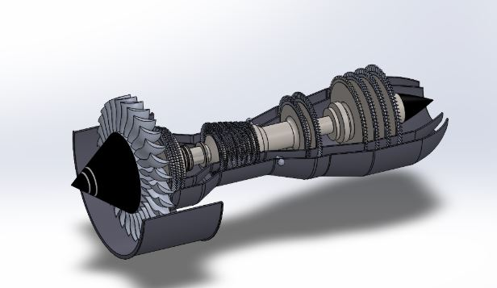

This page highlights my engineering simulation experience in stress analysis, modal analysis, nonlinear studies, and structural evaluation.
My work in finite element analysis has included evaluating component behavior under load, interpreting stress and displacement results, and using simulation to improve engineering design decisions.
I set up simulation studies, interpreted the results, compared design changes, and used analysis to identify potential stress concentrations and structural concerns.
SolidWorks, SolidWorks Simulation, engineering mechanics, finite element analysis, and structural evaluation methods.
This work strengthened my ability to connect simulation results with physical behavior and use computational analysis to support better engineering design choices.
← Back to Home